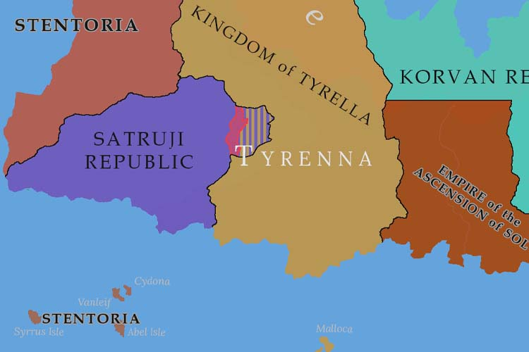

PRIMARY EDITION, VOL. II
YEAR 511, QUARTER ONE
INTERNATIONAL JOURNALISTS' COALITION

Tyrellan-aligned rebel groups in the eastern provinces of the Satruji Republic have initiated an uprising and allowed Tyrellan troops to occupy the region. Reports have indicated that the rebel cells were strengthened due to the redeployment of Satrujan forces after the border skirmish last year. The Satrujan army has mobilised to the now occupied region and has begun a campaign to recapture the territory.
Some reports from the battlefield have also indicated that the rebel groups have been spotted using Callistan manufactured small arms and anti-tank weapon systems, however these sightings are thus far unsubstantiated. Both the Tyrellan and Satrujan armies have also reported that the casualties they have inflicted on their enemy are greater than their own. Both nations have been operating on highly restricted borders since the beginning of the war, and many journalists that have attempted to gain access to the regions in which the fighting is taking place have been killed or captured.
Since the beginning of the campaign, the Satrujans have pushed only minorly into the occupied territory, and it is believed that they are facing heavy resistance. A reporter who was able to escape the Satrujan capital shortly after the beginning of the fighting stated as follows: "There is a general uneasiness in the country. Three or four years ago it was not uncommon to see patrols of military police throughout the city enforcing curfews and looking out for Tyrellan spies. These patrols have since grown thin, and with the recent outbreak of open conflict once more, you can tell that the Satrujan armed forces, which historically have relied on their regional technological superiority, are beginning to be stretched thin against the superior numbers of the Tyrellan armies."
In response to the fighting, the Olympian Navy has deployed a task force to the region, and the Veneran Navy has increased it's prescence in the Tyrennan Sea, particularly around the Tyrellan islands of Malloca and Mayora.
Government officials from the Mercurian Assyrian Confederation (otherwise known as the MAC) have made a series of state visits across the region of Cimmera. Representatives visited the nations of Aclura, the Atlai Kingdom, Simmera, the Republic of Haclesh, Tedra, Oshiela, Sirelland with the intention of proposing a new economic bloc in which all member nations would be part of a free trade zone.
The visits were received well in each nation, however the proposal garnered mixed attention across the region. Most notably the nations of Tedra, Oshiela, and Sirelland, having only a decade prior been engaged in the last of a long series of wars dating back to 461, each requesting one another's omission from the agreement. The MAC, unwilling to compromise the integrity of the proposal, has temporarily withdrawn the three nations from the invitation to sign the agreement.
The nation of Simmea, also citing recent wars in the region, requested an exemplary clause in which they are to be granted the right to close Simmean ports from the free trade agreement at any time. The MAC granted this request on the condition that overland trade is not disrupted, and that the Simmean government issues a warning two days in advance of any maritime trade closures. The Simmeans accepted these terms and were admitted into the agreement, alongside the nations of Aclura, the Atlai Kingdom, and the Republic of Haclesh. The new pact has been named as the Cimmeran Economic Cooperative.
On the eastern side of the Cimmeran Sea, the Millar State has expressed an interest in entering into a separate trade agreement with the CEC as a whole. A meeting on this agreement is expected to be held in the next quarter. In a different turn of opinion, the Theran Kingdom has expressed significant opposition to the formation of the CEC. The MAC has not issued any statement on this opposition.
Folllowing the ratification of the CEC, an MAC government official issued a statement regarding the current situation in the bordering economic zone of the HETU. The official relayed that the MAC "encourages the nations involved to exercise restraint and find a diplomatic solution to the present crisis." This statement has thus far received no response from HETU, however has been echoed by other nearby nations.
Government operations in the MAC to increase resource extraction within the mountainous western provinces of the Constituent Republic of Assur have discovered a rich vein of germanite with concentrations of up to 1.2% germanium, the current highest concentration known globally. In light of this development, the MAC government was quick to establish negotiations with the Callistan Republic, noting the importance of the resource in the development of microchips.
A four year deal was soon struck between the two nations. The MAC would sell germanium at a 20% reduced price and silicon at a 15% reduced price to the Callistan Republic (price reduced from usual market rates). In return, the Callistan Army Engineering Division will be sent on a major deployment to the MAC to help develop the factories and infrastructure needed in order for the nation to fully utilise the newly discovered ore veins.
As the quarter came to a close, the MAC government has once again hosted its yearly celebration of the founding of the nation's confederation. The celebration was hosted in the nation's capital city of Solari, and to mark the milestone of 75 years was organised at a much grander scale than those of previous years. Crowds were awed by a major military parade, showcasing the strength and prosperity that the confederation has brought to its people.
The HETU has signed a new free trade agreement with the Empire of the Ascension of Sol. The agreement involves an open market for Cerium and Neodymium, two rare-earth metals that have historically been supplied almost entirely by the Chatkan Republic and the Risanov Kingdom. It is hoped that the deal will help to bring down prices for HETU manufacturing and stimulate the Assentian mining industry.
In response to the agreement, the Risanov Kingdom has imposed a series of trade sanctions on both the Empire of the Ascension of Sol and the HETU, however the sanctions are notably more significant in the former instance. Risanovi sanctions against the Assentians include a full ban on the purchase of Risanovi industrial goods (this includes machinery and specialist equipment) as well as a ban on Assentians imports of metals and rare-earth metals to the Risanov Kingdom. Sanctions placed against the HETU include some restrictions on the usage of Risanovi firms for outsourced manufacturing.
The Empire of the Ascension of Sol has entered into an agreement with the Callistan Republic wherein Assentian cobalt will be sold at a 10% reduced price exclusively to the Callistans, and in return the Callistan Air Force has sent three squadrons to the Assentian mainland. No comment was given on the nature or reason behind this military exchange, however a Veneran patrol ship in the Tyrennan sea spotted "a series of unidentified aircraft" flying alongside Callistan fighter-bomber planes and transports.
The Republic of Nova Alba has declared that within the coming months the nation will transition to operate on a closed economy and closed borders. It is unclear at this time as to what exactly this will entail, however border patrols from the Kingdom of Arka have stated that they have observed a build-up of military forces along the Alban border.
The nation of Caripatha (which relies extensively on trade with Alba) has openly condemned the declaration, stating that it will "weaken the region in all aspects: economically, politcally, and militarily, and promotes division in the region which has only recently achieved a state of unprecidented peace."
The Kingdom of Arka has also expressed major concern at the declaration, and has stated that it will be responding by reinforcing its borders and increasing production of naval vessels.
After many years isolated from much of the continent of Drakia and still reeling from lasting effects of the long legacy of conflicts the island has seen, the Gale Islands have become part of what appears to be a new series of economic developments being enacted by the Arrolian government.
New ports have been constructed on the islands, and funding has been allocated to majorly boost the fishing industry in the western Sirennan Ocean. The developments have been received highly by residents on the island, who hope that it will bring a new era of prosperity to their communities.
A historic economic agreement has been signed between Arrolia and the Republic of Yawen that seeks to use an international rail network to allow trade to pass more easily between the Emerald Sea and the Sirennan Ocean. The deal will involve both nations working to standardise railway lines between the two nations and develop the infrastructure and legislation to allow ports to operate seamless international trade.
The deal has seen major interest from the Kingdom of Danewa, with various government officials stating that they will be watching the plan closely. The nation of Ignara Olympia on the other hand, has vehemently condemned the agreement, pointing to the War of Sapphires which occurred in the region between 412 and 418 and was largely due to trade destabilisations that occurred due to the "Sapphire Road", a trade network which relied on linking the inner seas of Drakia and Trachsye with the nations of the Sirennan Ocean.
The Republic of Lusnia has begun a concerted effort to catch up to the Callistans in the field of microelectronics. The nation seeks to expand its knowledge of the field and hopefully also begin it's own production of microchips. The effort is governmentally backed and has significant funding, however some experts are skeptical that a nation will be able to join the technological race of a cutting-edge field simply by "throwing money at the problem", as one researcher put it.
The Lusnian government has also moved to acquire an expanded military force, with an emphasis on the production of an increased naval fleet. Reports have also come in that the nation has already deployed its existing fleet to patrols across the oceans of Deyusia, and it appears that the Lusnians now wish to expand their influence outside of their islands and become a more prominent power in the Deyusian continent.
In an unprecidented operation, the naval forces of the Serdovan Collective have deployed fleets to the Emerald Sea in an effort to get as close as possible to the Olympian blockade and use long range optical and radar monitoring equipment to gather as much information as possible on the occurrences taking place within the west of the Emerald Sea.
The Serdovan government has not yet disclosed any of the information collected. However, a package sent to the Harbour Quarterly from anonymous person claiming to have served on Serdovan vesseles states that Vislandian ships have been observed directly attacking fishing vessels, and that in some instances even missile launches have been sighted. No photos were provided in the package, and it is therefore difficult to verify these claims or whether or not the package's origins are as stated.
The Olympian blockade of the west of the Emerald Sea has seen extensive international condemnation. Governments have demanded to know more about the attacks on fishing vessels, however the Olympian Defence Minister has remained stubborn in maintaining a policy of total control of information and supplies into and out of the region, once again emphasising the severity of the potential security threat currently prsesent.
The Republic of Lusnia has begun a major diplomatic effort to stabilise the region, sending envoys to the Republic of Datin, Theziland, Caron Kingdom, and the Republic of Vemya in an effort to act as a mediator between nations embroiled in the crisis, however the New Olympian State has thus far showed no intentions to join these talks. In a similar vein, the Serdovan Collective has also called for a diplomatic summit to discuss a peaceful resolution to the conflict, however it would appear that this has also fallen on deaf ears within the Olympian cabinet.
After several weeks of negotiations, the nations of Caripatha and the Republic of Ladum have begun joint military exercises using the island of Baradun as a staging ground. An extensive military joint facility has also begun construction on the island, with the construction efforts also prompting the development of expanded ports and road infastructure, boosting the local economy.
It is believed that the two nations are now engaged in a series of war games intended to simulate a potential conflict in the Bronze Gulf. The recent announcement of future isolationist policies from the Republic of Nova Alba is also believed to be affecting the nature of these war games, with some military experts believing that Caripatha and Ladum may be considering the possibility of reasserting economic connections with Smokey Island and Forge Island through the use of military force.
The Home Secretary of the Government of Rossara has announced that a series of major deployments of the Dorsan Army have been spotted throughout the forests of the Dorsan-Rossaran border. These deployments are also stated to be making use of the Veneran weapons recently sold to the Dorsan Republic. The minister has urged foreign governments, particularly on the continent of Trachsye, to take immediate notice of this buildup of forces and warns that there may be a major conflict on the horizon.
Following the recent allegations of economic attacks made by Taham against Havirra, legislators within HETU have concluded that while there is no immediate proof of deliberate economic actions made against the nation of Taham by Havirra, the Havirran government was implementing policies and programs that were actively hurting the HETU economy as a whole. The Havirran economic minister has since been urged to step down, however has thus far made no comment on the legislative findings.
In light of these events, the HETU Legislative & Regulations Organisation has decided to begin a full re-evaluative program, wherein legislators will spend the next three to five months analysing the current trade legislation within HETU and work to reduce potentially harmful policies and close various potential or known loopholes.
Three naval vessels flying the flag of the nation of Ignara Olympia were spotted patrolling the eastern coast of Landha. The vessels seen were of currently unidentified designs, however are believed to be primarily destroyer class vessels. Some reports have also indicated that an Olympian helicopter was spotted landing upon and shortly after departing from one of these vessels, however these reports are as of now unsubstantiated. The Ignaran government has thus far declined to comment on the sightings.